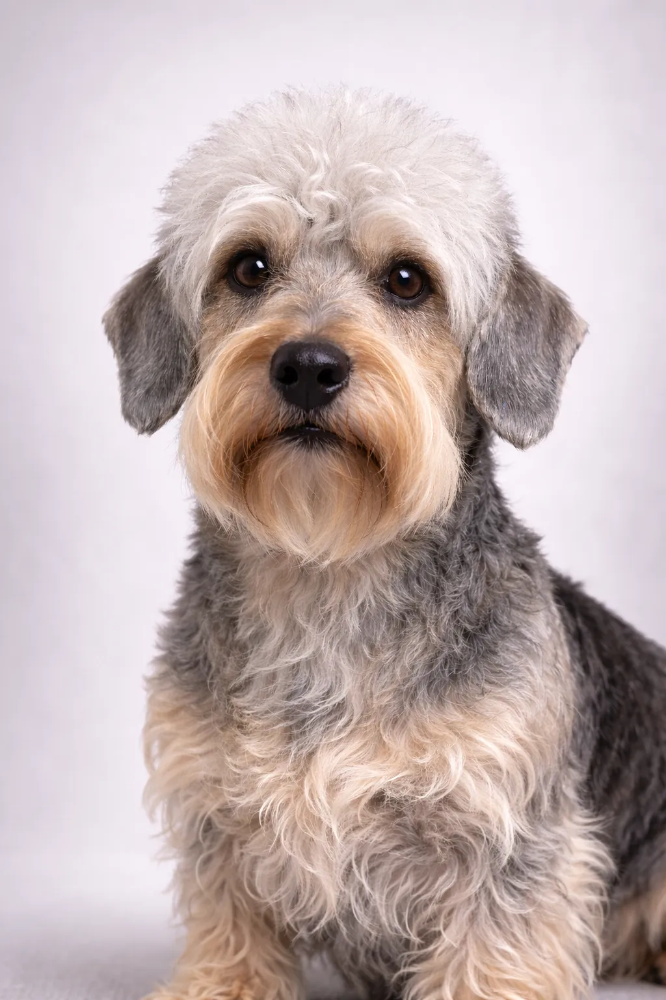

Dandie Dinmont Terrier
Un independiente, determinado raza pequeña que es un compañero maravilloso.
Puntuaciones de la Raza
Temperamento
Descripción
El Dandie Dinmont es un raro terrier escocés, la única raza de perro nombrada en honor a un personaje ficticio (de la novela Guy Mannering de Sir Walter Scott). Su apariencia única los hace inconfundibles.
Temperamento
El Dandie Dinmont Terrier es conocido por ser independiente, decidido y digno. Son excelentes con los niños y hacen maravillosas mascotas familiares. La socialización temprana les ayuda a convertirse en compañeros equilibrados.
Salud
Generalmente saludable con una esperanza de vida de 12-15 años. Las preocupaciones comunes incluyen luxación patelar y problemas dentales. Los chequeos veterinarios regulares y el cuidado preventivo son importantes. Mantener un peso saludable ayuda a prevenir muchos problemas de salud.
Ejercicio
Necesidades de ejercicio moderadas con paseos diarios y sesiones de juego regulares. Disfrutan de una mezcla de actividad física y tiempo de relajación. Los juegos interactivos y sesiones de entrenamiento proporcionan estimulación mental. Una rutina de ejercicio constante los mantiene sanos y felices.
⦿ ¿Es Esta Raza Adecuada para Ti?
✓ Ideal Para
- Residentes de apartamentos
- Quienes buscan un terrier único
- Hogares tranquilos
- Alérgicos
✗ No Ideal Para
- Quienes buscan un perro muy activo
- Hogares con juego brusco (problemas de espalda)
- Quienes buscan una raza común
- Ambientes sin correa
Nuestro Veredicto: Terriers únicos y dignos con herencia literaria. Los Dandies son más tranquilos que la mayoría de los terriers y se adaptan bien a la vida en apartamento.